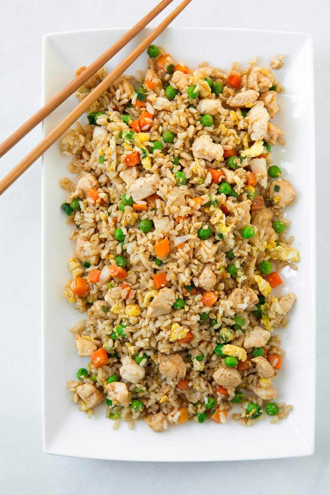

Home
Chicken Fried Rice

Description
This chicken fried rice will easily become one of your go-to dinners!
It is easy because it calls for basic ingredients you probably have in your fridge
or freezer, it is hearty and filling, and it is perfectly flavorful.
Plus, it is quick to make right on your stovetop, and clean up is a
breeze. It also makes perfectly delicious leftovers if you are lucky enough
to have any left, or make it ahead for meal prep for the next
couple of days
Ingredients
- Brown rice
- Chicken breasts
- Toasted sesame oil
- Vegetable oil
- Frozen peas and carrots blend
- Green onion
- Garlic
- Eggs
- Low-sodium soy sauce
Steps
- In a large non-stick wok or skillet, heat 1 1/2 tsp sesame oil and one
1/2 tsp of the canola oil over medium-high heat.
- Add chicken pieces, season lightly with salt and pepper,
and saute until cooked through, about 5 to 6 minutes.
- Transfer chicken to a plate or a piece of foil and set aside.
- Return skillet to medium-high heat, add remaining one 1/2 tsp sesame
oil and 1 1/2 tsp canola oil.
- Add peas and carrots, blend, and green onions and saute 1 minute,
then add garlic and saute 1 minute longer.
- Push veggies to the edges of the pan.
- Add eggs in the center and cook and scramble until just set.
- Return chicken to the skillet along with rice.
- Add in soy sauce and season with salt and pepper to taste.
- Toss everything together and serve warm with Sriracha to taste if
desired.